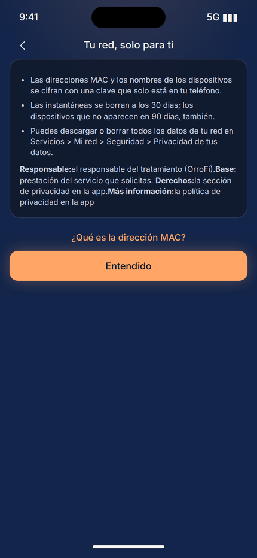
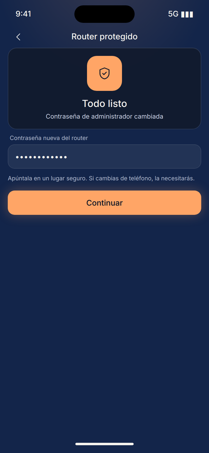
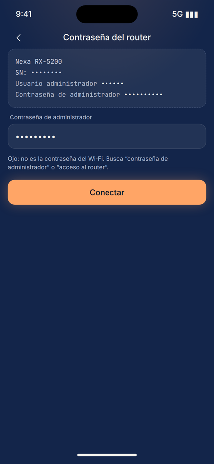
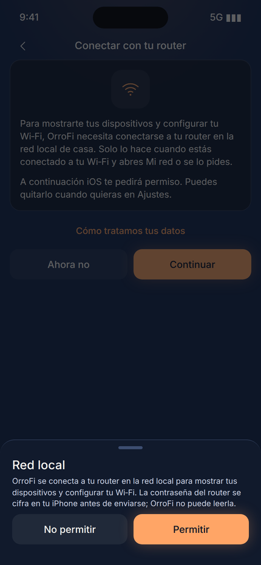
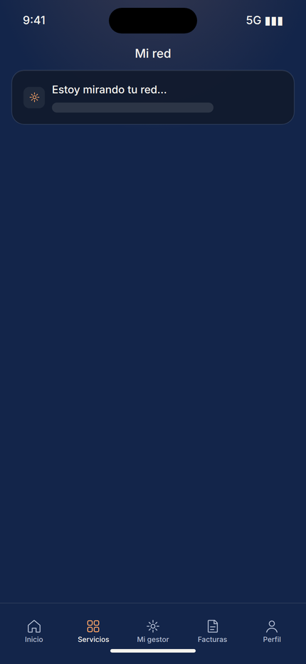
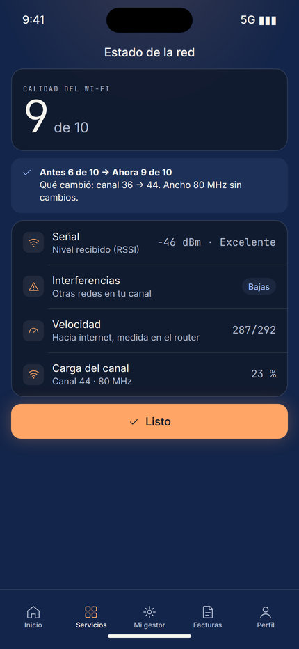
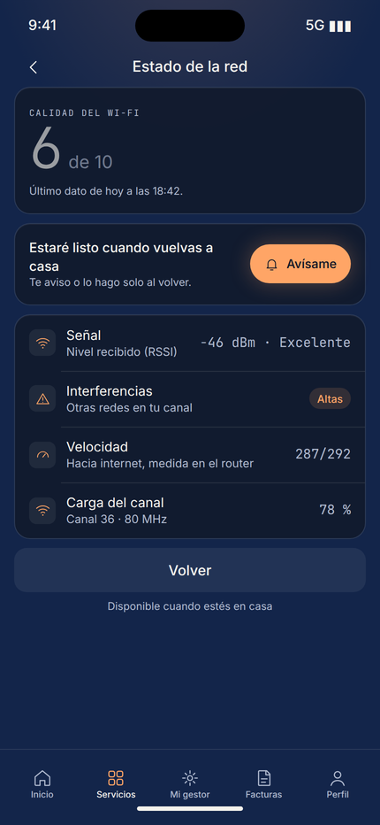
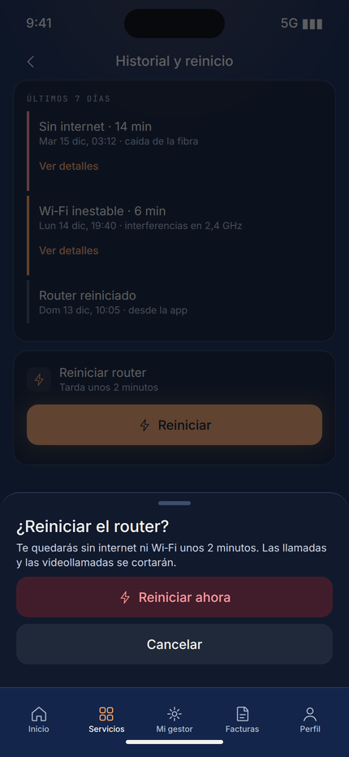
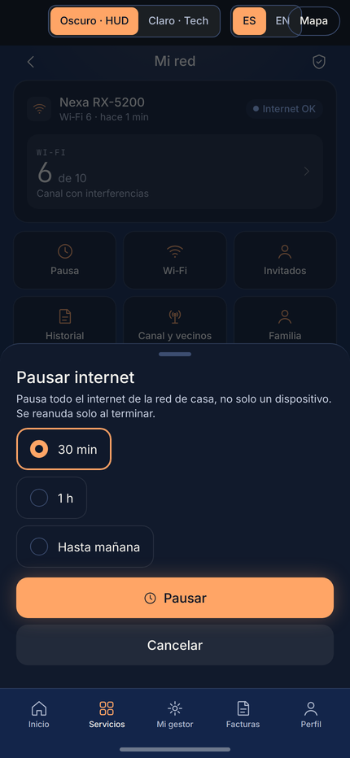

Сеть остаётся вашей
Коротко, почему сеть не становится общей: чужой телефон не входит в неё сам по себе.

Роутер, устройства, гости и спокойствие дома. Mi red показывает, кто в сети, и помогает навести порядок без звонка.
Коротко, почему сеть не становится общей: чужой телефон не входит в неё сам по себе.

Заводской пароль лучше сменить. Экран ведёт к этому спокойно и показывает, что у Wi‑Fi ещё можно усилить.

Защита, которую вы только что включили, уже работает. Можно вернуться к обычным делам сети.

Необязательный шаг для тех, кто хочет закрыть роутер чуть крепче. Его можно пропустить и ничего не сломать.

Простыми словами: зачем устройству этот адрес и почему его иногда спрашивают, когда пускают в сеть.

OrroFi просит разрешения поговорить с роутером, который стоит у вас дома.

Сеть рядом есть, а разрешения нет. Экран подскажет, где в настройках телефона его включить.

Раздел открыт, но устройства молчат. Пока нет доступа к локальной сети, дома для Mi red как будто нет.

Телефон ищет роутер, пока вы в домашнем Wi‑Fi. Дальше понадобится пароль администратора с наклейки на корпусе, не пароль от Wi‑Fi.
Имя роутера на кадре вымышлено. Из гостевой или чужой сети этот шаг лучше не делать.

Введите пароль роутера, чтобы Mi red увидела дом.
Пароль хранится на телефоне в зашифрованном виде и открывается только после Face ID или кода телефона. В открытом виде на наши серверы он не отправляется.

Пароль не подошёл. Сверьтесь с наклейкой или с тем, что задавали сами, и попробуйте ещё раз.

Роутер ответил. Можно смотреть, кто в сети, и не возвращаться к паролю на каждом шаге.

Дверь в Mi red. Если роутер ещё не знаком приложению, сначала будет подключение, и только потом дом.
Телефон спрашивает, можно ли видеть локальную сеть. Без этого роутер в той же комнате для приложения невидим.

Имя домашнего Wi‑Fi и пароль, который открывается после Face ID.
Пароль Wi‑Fi показывается только после Face ID, и приложение его не сохраняет.

Система узнаёт вас по лицу, прежде чем показать то, что не стоит оставлять на виду.

Своя сеть для тех, кто зашёл ненадолго, чтобы не диктовать им пароль вашего Wi‑Fi.
Гости получают отдельную сеть Wi‑Fi роутера со своим паролем. Отделение от домашних устройств зависит от модели и настроек роутера.

Здесь весь дом: роутер, оценка связи и устройства. Отсюда же пауза, гости, история, канал и семья.

Приложение осматривает сеть. Картина ещё собирается, и на этом экране лучше немного подождать.

Роутер не отвечает. Пока связи с ним нет, ни пауза, ни список устройств не оживут.

Вас нет дома, и локальная сеть отсюда не видна. Приложение так и говорит.

Mi red можно связать с оператором. Связка включается только по вашему поручению.

Поручение дано, оператор подтвердил. Дата на кадре вымышлена и не ваш договор.

Оценка сети и то, из чего она сложилась. Не одна голая цифра, а понятные причины, почему связь такая.

OrroFi пробует улучшить канал. Пока идёт попытка, лучше не закрывать экран на полпути.

Чем кончилась попытка: помех стало меньше или картина почти не сдвинулась. И то и другое сказано прямо.

Вне дома диагностику не запустить. Экран не притворяется, что видит роутер через весь город.

Соседские сети и шум на канале. Отсюда яснее, почему связь то ровная, то капризная.

Журнал домашней сети и перезапуск роутера, если всё встало и обычные шаги уже не помогают.

Перезапуск на время погасит Wi‑Fi у всех дома. Приложение предупреждает до того, как вы подтвердите.

Пауза гасит интернет во всём доме на выбранный срок, а не у одного телефона. Когда срок выйдет, связь вернётся сама.

Прежде чем отрезать одно устройство, приложение объясняет, что у него пропадёт доступ. Решение остаётся за вами.

Одно устройство крупным планом: как его зовут, на связи ли оно и что с ним можно сделать.

В сети появился незнакомец. Можно понять, чей это аппарат, и решить, оставлять ли его.